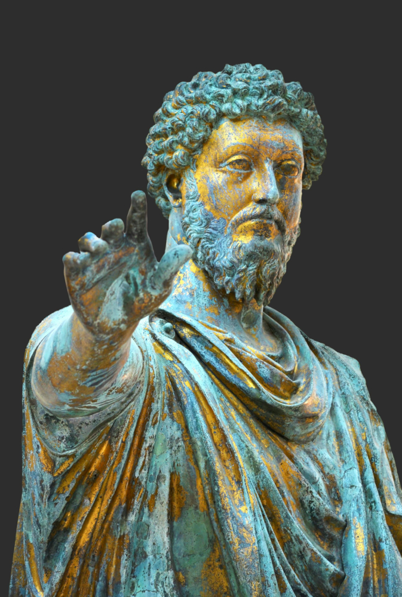
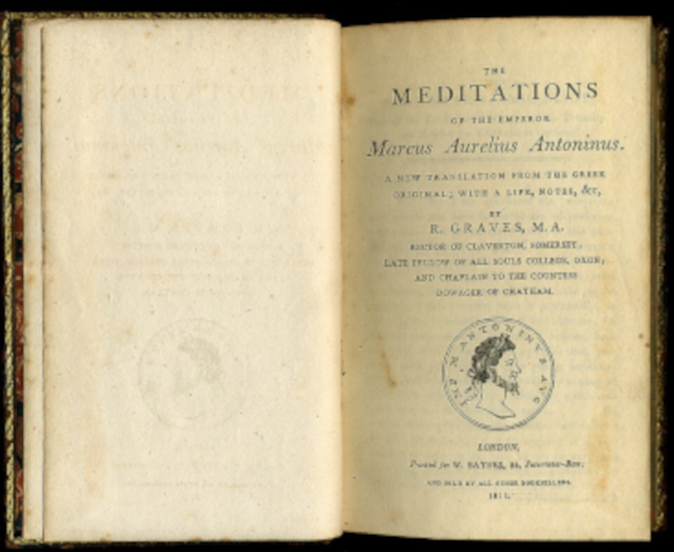

"Se você está sofrendo por coisas externas,
não são elas que estão te perturbando,
mas o seu próprio julgamento sobre elas.
E está em seu poder anular este julgamento agora."

Quem Foi?
César Marco Aurélio Antonino Augusto (121–180 d.C.) foi um dos mais influentes imperadores romanos, governando de 161 a 180 d.C. Ele é amplamente reconhecido como o último dos "Cinco Bons Imperadores" e simboliza o apogeu da Pax Romana.
Aqui estão os pontos principais sobre sua vida e legado:
Imperador Filósofo: Conhecido por sua sabedoria e ética, Marco Aurélio praticava o estoicismo, uma filosofia que enfatiza a virtude, a razão, o autocontrole e a aceitação do destino.
"Meditações": Ele é famoso por seu diário pessoal, conhecido como Meditações. Escritos durante campanhas militares, esses textos não eram para publicação, mas sim reflexões pessoais sobre como manter a integridade moral em meio ao caos e ao poder absoluto.
Reinado Desafiador: Seu governo foi marcado por crises intensas, incluindo guerras nas fronteiras germânicas e a Peste Antonina, uma epidemia que devastou o império.
Principais Ideias
Durante anos de seu reinado, Marco Aurélio praticou o estoicismo, uma filosofia que ensina a não permitir que fatores externos dominem nossa mente e nossas emoções.
Ao longo da vida, ele escreveu reflexões pessoais sobre disciplina, virtude e a maneira de enfrentar as dificuldades da existência. Mais tarde, esses escritos deram origem a "Meditações", um livro que se tornou uma das obras mais influentes do estoicismo.

Citações
"Se algo externo te aflige, a dor não é causada pela coisa em si, mas pela sua própria estimativa dela; e isso você tem o poder de revogar a qualquer momento."
Minhas Reflexões
Essa frase me fez perceber como os seres humanos são gananciosos, já que queremos controlar todas as coisas, sendo que, neste mundo, nada realmente nos pertence. Contudo, acredito que devemos buscar ser melhores e evoluir a cada dia.
O Estoicismo Hoje
Mesmo com o passar dos séculos, suas ideias ainda influenciam pessoas que buscam disciplina, tranquilidade, autocontrole e autoaperfeiçoamento. E a cada dia vêm sendo aplicadas em diversas áreas da vida.
Curiosidades
Seu livro foi escrito para reflexões pessoais durante períodos de Guerra e como ele via o mundo, e não era para ser publicado.
Marco Aurélio durante sua vida teve diversos mentores, como:
Júnio Rústico: Filósofo estoico e mentor de Marco Aurélio, conhecido por incentivar a disciplina, a humildade e o estudo da filosofia estoica.
Apolônio de Calcedônia: Filósofo que ensinou equilíbrio emocional, resistência diante das dificuldades e dedicação à razão.
Epicteto: Filósofo estoico cujos ensinamentos influenciaram profundamente Marco Aurélio e sua visão sobre autocontrole e aceitação do destino.